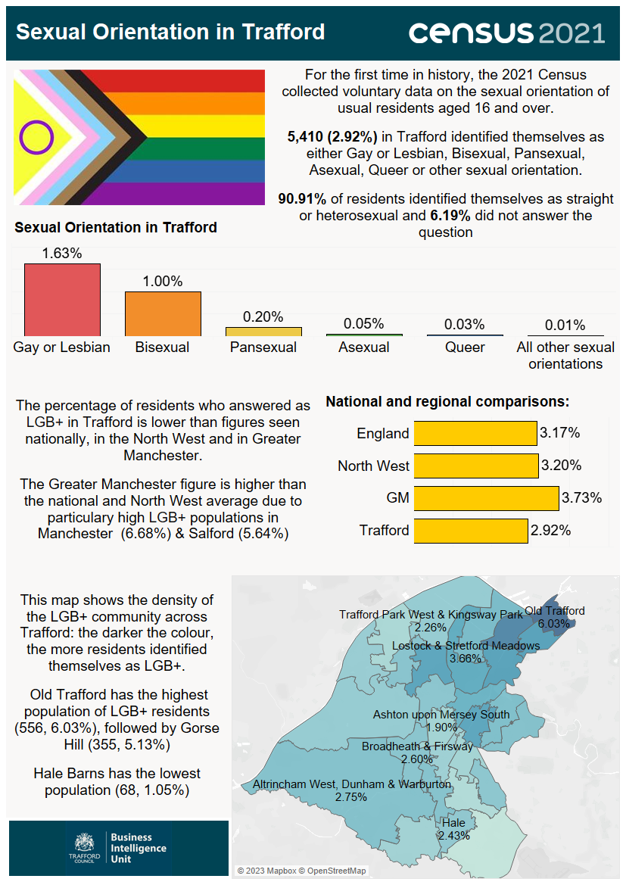

Source: Office for National Statistics.

Infographic containing statistics relating to sexual orientation released on from the census taken on Sunday 21 March 2021. For the first time in history, the 2021 census collected voluntary data on the sexual orientation of usual residents aged 16 and over. 5,410 (2.92%) in Trafford identified themselves as either Gay or Lesbian, Bisexual, Pansexual, Asexual, Queer or other sexual orientation. 90.91% of residents identified themselves as straight or heterosexual and 6.19% did not answer the question. The breakdown of the other responses were as follows: Gay or Lesbian (1.63%), Bisexual (1.00%), Pansexual (0.20%), Asexual (0.05%), Queer (0.03%) and All other sexual orientations (0.01%). The percentage of residents who answered as LGB+ in Trafford (2.92%) is lower than figures seen nationally (3.17%), in the North West (3.20%) and in Greater Manchester (3.73%). The Greater Manchester figure is higher than the national and North West averages due to particularly high LGB+ populations in Manchester (6.68%) and Salford (5.64%). Within Trafford's Middle-layer Super Output Areas, Old Trafford has the highest population of LGB+ residents (556, 6.03%), followed by Gorse Hill (355, 5.13%). Hale Barns has the lowest population (68, 1.05%).